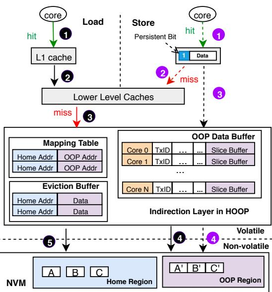
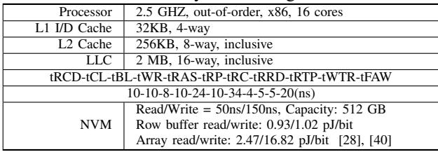
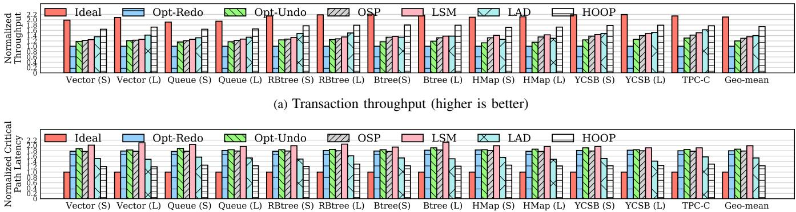
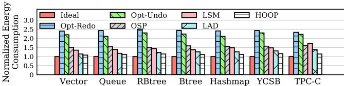
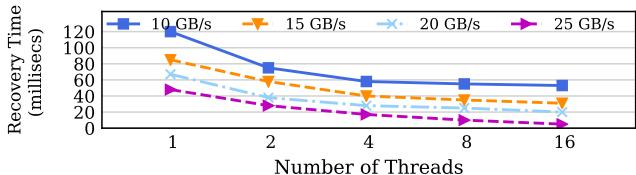
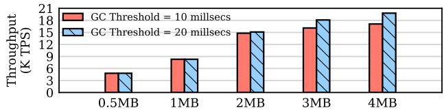

HOOP: Efficient Hardware-Assisted Out-of-Place Update for Non-Volatile Memory 图表详解¶
TABLE I: Comparison of various crash-consistency techniques for NVM. Compared with existing works, HOOP provides a transparent hardware solution that significantly reduces the write traffic to NVM, while achieving low persistence overhead.¶

- 该表格系统性对比了多种面向 NVM 的崩溃一致性技术，核心维度包括读取延迟、关键路径影响、是否需要刷新与内存栅栏指令、以及写入流量。
- 表格将技术分为三大类：Logging（日志）、Shadow paging（影子分页）和 Log-structured NVM（日志结构化 NVM），并最终列出本文提出的 HOOP 方案作为对比基准。
- 在 Logging 类别下，进一步细分为 Undo、Redo 和 Undo+Redo 子类。其中：
- Undo 类型如 ATOM [24]、Proteus [47] 等，普遍具有 低读取延迟，但多数在关键路径上执行，且写入流量为中高。
- Redo 类型如 Mnemosyne [49]、SoftWrAP [14] 等，读取延迟多为高，部分方案（如 BPPM [31]）可实现低延迟，但写入流量仍偏高。
- Undo+Redo 类型如 FWB [40]，读取延迟高，写入流量高。
- Shadow paging 类别包含 Page 级（如 BPFS [10]）和 Cache line 级（如 SSP [39]）。两者均需在关键路径上执行，BPFS 需要刷新与栅栏，而 SSP 不需要；SSP 实现了较低的写入流量。
- Log-structured NVM 类型以 LSNVMM [17] 为代表，其读取延迟高，不在关键路径上，无需刷新与栅栏，写入流量为中等。
- HOOP 方案在所有维度上表现优异：
- 读取延迟：低
- 关键路径影响：无
- 刷新与栅栏需求：无
- 写入流量：低
| Approach | Subtype | Representative Project | Read Latency | On the Critical Path | Require Flush & Fence | Write Traffic |
|---|---|---|---|---|---|---|
| Logging | Undo | DCT [27] | Low | Yes | No | High |
| ATOM [24] | Low | Yes | No | Medium | ||
| Proteus [47] | Low | Yes | No | Medium | ||
| PiCL [37] | High | No | No | High | ||
| Redo | Mnemosyne [49] | High | Yes | Yes | High | |
| LOC [32] | High | Yes | No | High | ||
| BPPM [31] | Low | Yes | Yes | Medium | ||
| SoftWrAP [14] | High | Yes | Yes | High | ||
| WrAP [13] | High | Yes | No | High | ||
| DudeTM [29] | Low | No | No | High | ||
| ReDU [23] | High | Yes | No | Medium | ||
| Undo+Redo | FWB [40] | High | Yes | No | High | |
| Shadow paging | Page | BPFS [10] | Low | Yes | Yes | High |
| Cache line | SSP [39] | Low | Yes | Yes | Low | |
| Log-structured NVM | LSNVMM [17] | High | No | No | Medium | |
| HOOP | — | Low | No | No | Low |
- HOOP 的优势在于其硬件辅助的 out-of-place update 机制，避免了传统日志或影子分页带来的额外写入开销，并通过内存控制器中的轻量级间接层实现透明地址映射，从而在不牺牲原子持久性前提下，显著降低性能开销。
Fig. 1: Illustration of different crash-consistency techniques. (a) Logging technique requires that both logs and data must be persisted, which incurs double writes; (b) Shadow paging maintains two copies of data, it suffers from copy-on-write overhead; (c) Log-structured NVM alleviates the double writes, but it suffers from significant overhead of index lookup; (d) Our hardware-assisted out-of-place update reduces the write amplification significantly, while providing efficient data accesses.¶

- 图片展示了四种不同的崩溃一致性技术，旨在对比其在非易失性内存（NVM）系统中的数据持久化机制与性能开销。
- (a) Logging：CPU通过缓存将数据写入内存控制器，同时生成日志（Logs）并写入NVM。该方法要求日志和原始数据都必须持久化，导致双倍写入放大（double writes），显著增加NVM写流量和磨损。
- (b) Shadow Paging：CPU更新数据时，系统会先复制一份旧数据（Copy），再在副本上进行修改。此过程产生额外的拷贝开销（copy-on-write overhead），即使只修改少量数据，也可能触发整个页或缓存行的复制。
- (c) Log-structured NVM：所有写操作追加到日志中，避免了双写问题，但引入了索引查找开销（index lookup overhead）。每次读取需通过索引定位最新数据位置，增加了关键路径延迟。
- (d) HOOP：提出硬件辅助的原地外更新机制。更新数据被写入新位置（Out-of-place Write），旧数据保留直至新数据持久化。通过数据打包（data packing）和数据合并（data coalescing）优化写入效率，显著降低写放大，同时保持高效的数据访问。
| 技术类型 | 写放大 | 关键路径延迟 | 主要开销来源 |
|---|---|---|---|
| Logging | 高（双写） | 高 | 日志写入、内存屏障、缓存刷新 |
| Shadow Paging | 中高 | 中高 | 数据拷贝、TLB更新、页面合并 |
| Log-structured NVM | 低 | 高 | 索引维护、地址查找、垃圾回收 |
| HOOP | 最低 | 最低 | GC迁移、映射表查询（极小） |
- HOOP的核心优势在于：无需日志、不强制持久化顺序、利用硬件透明实现地址重映射，从而在保证原子持久性的同时，大幅减少写入流量和关键路径延迟。
- 图中绿色箭头代表HOOP的“原地外写入”路径，虚线表示数据合并与打包过程，直观体现其优化策略。
Fig. 2: Hardware-assisted out-of-place update with HOOP. HOOP performs out-of-place writes and reduces write traffic with data packing and coalescing. To reduce the storage overhead, HOOP adaptively migrates data in the out-of-place (OOP) region back to the home region with optimized GC.¶

- 图片展示了 HOOP 系统的架构概览，核心目标是实现 硬件辅助的 out-of-place update，以在保证原子持久性的同时，降低写入放大和关键路径延迟。
- 整体结构分为三层：顶部为 Cache Hierarchy，中间为 Memory Controller，底部为 NVM（非易失性内存）。
- 在 NVM 层，数据被划分为两个区域：
- Home Region：原始数据存储位置。
- OOP Region：用于存放更新后数据的“外置”区域，采用日志结构组织。
- Memory Controller 是 HOOP 的核心，包含三个关键组件：
- Mapping Table：维护从 Home Region 地址到 OOP Region 地址的物理-物理映射，支持快速地址翻译。
- OOP Data Buffer：每个核心专用的缓冲区（默认 1KB），用于暂存事务中的更新数据及元数据，支持 Data Packing 优化。
- Eviction Buffer：缓存从 OOP Region 迁移回 Home Region 的数据，确保在 GC 期间映射表条目被清除时，仍能访问最新版本数据。
- 数据流方向清晰标注：
- Store 操作：数据从 Cache Hierarchy 写入 Memory Controller 的 OOP Data Buffer，经 Data Packing 后写入 OOP Region。
- Load 操作：从 Cache Hierarchy 发起读取请求，通过 Mapping Table 查找数据是否在 OOP Region，若命中则从 OOP Region 读取；否则从 Home Region 读取。
- Garbage Collection (GC)：周期性地将 OOP Region 中的最新数据版本迁移回 Home Region，释放 OOP Region 空间，并清理 Mapping Table 相关条目。
- 关键优化技术在图中明确标出：
- Data Packing：在 OOP Data Buffer 和 OOP Region 之间进行，将多个细粒度更新打包成单个缓存行，减少写入次数。
- out-of-place update：所有更新均写入新位置（OOP Region），旧数据保留直至新数据持久化，天然支持原子性。
- optimized GC：后台执行，结合 data coalescing 技术，避免对同一地址的重复写入，进一步降低写入流量。
| 组件 | 功能 | 关联优化 |
|---|---|---|
| Cache Hierarchy | 处理常规 Load/Store 指令 | 无直接关联 |
| Memory Controller | 核心控制单元，管理地址映射、数据缓冲与 GC | Data Packing, Mapping Table, Eviction Buffer |
| OOP Data Buffer | 缓存事务更新，支持打包 | Data Packing |
| Mapping Table | 物理地址映射，支持快速读取 | 透明硬件实现 |
| Eviction Buffer | 缓存 GC 迁移数据，防止读取陈旧数据 | 保障一致性 |
| OOP Region | 存储更新数据的日志结构区域 | out-of-place update |
| Home Region | 原始数据存储区 | GC 目标区域 |
| Garbage Collection | 后台迁移数据，回收空间 | optimized GC, data coalescing |
- 该图直观体现了 HOOP 的设计哲学：将复杂性下沉至硬件层（Memory Controller），对上层软件透明；通过 out-of-place update + data packing + optimized GC 三重机制，在保证强一致性的同时，显著降低性能开销和写入放大。
Fig. 3: Data packing in HOOP.¶

- 图片展示了 HOOP 系统中的 数据打包（Data packing） 机制，旨在减少 NVM 写入流量。
- 上半部分显示了 N 个独立缓存行（cache lines），分别标记为 M1 至 M8，每个缓存行中包含一个被修改的数据块（如 A、B、C、E），其余部分为空白。
- 下半部分是经过 数据打包后形成的 Memory Slice，它将来自不同缓存行的更新数据（A、B、C、…、E）紧凑地排列在一个连续的内存单元中。
- 打包后的 Memory Slice 占用 两个缓存行的空间，实现了空间利用率的最大化。
- 数据打包的核心优势在于：将多个分散的小粒度更新合并为一次大块写入，从而显著降低 NVM 的写入次数和带宽消耗。
- 此机制与 HOOP 的 字粒度（word granularity）跟踪 相结合，允许在事务提交时高效持久化多个更新，而不必为每个缓存行单独写入。
- 图中未显示但文中提及的是：元数据（metadata）也会被打包，通常与数据一起存储在同一个 Memory Slice 中，用于记录原始地址、事务 ID 等信息。
| 原始状态 | 打包后状态 |
|---|---|
| N 个缓存行，每个含少量更新数据 | 1 个 Memory Slice，占用 2 个缓存行 |
| 分散写入，高写放大 | 集中写入，低写放大 |
| 每个缓存行需单独持久化 | 多个更新合并为一次持久化操作 |
- 该设计体现了 HOOP 在硬件层面优化写入效率的关键思想：通过数据压缩和聚合，最小化对 NVM 的访问次数，同时保持原子性和崩溃一致性。
Fig. 4: Transaction execution of different approaches. Both undo and redo logging deliver lengthy transaction execution times due to log writes. Shadow paging has to copy additional data before performing in-place updates. HOOP achieves fast transaction execution with out-of-place updates.¶

- 图片展示了四种不同 crash-consistency 技术在事务执行过程中的时间线对比，包括 Undo logging、Redo logging、Shadow paging 和 Hardware-assisted out-of-place update (HOOP)。
- 每个子图的横轴代表时间，纵轴表示事务中数据更新和日志操作的顺序。图中用不同颜色方块标记不同类型的操作：红色为数据写入（store），蓝色为 undo log，黄色为 redo log，灰色为 flush 操作。
- 在 (a) Undo logging 中，每个数据更新前必须先写入对应的 undo log，且需在事务结束前执行 flush 以确保日志持久化，导致事务路径长、延迟高。
- 在 (b) Redo logging 中，数据更新可先执行，但必须在事务结束前将 redo log 写入并 flush，虽比 undo logging 灵活，但仍需额外写入和同步操作。
- 在 (c) Shadow paging 中，系统在更新前复制整个页面或缓存行，然后在新位置进行修改，避免了日志开销，但引入了“copy-on-write”带来的额外写入和 TLB 更新开销。
- 在 (d) Hardware-assisted out-of-place update (HOOP) 中，所有更新直接写入 OOP region，无需预先写日志或复制页面，也不强制 flush，仅在 Tx_end 时批量持久化打包后的数据，显著缩短关键路径。
- 对比可见，HOOP 的事务执行时间最短，因其消除了日志写入和页面复制的开销，同时利用硬件缓冲与打包机制优化写入效率。
- 下表总结各方法在关键路径上的主要开销：
| 方法 | 关键路径开销 | 是否需要 Flush | 是否需要额外写入 |
|---|---|---|---|
| Undo logging | 高（log + data + flush） | 是 | 是 |
| Redo logging | 中（data + log + flush） | 是 | 是 |
| Shadow paging | 中高（copy + update + flush） | 是 | 是 |
| HOOP | 低（仅打包后写入） | 否（由硬件管理） | 否 |
- 图中明确标注 Tx_begin 和 Tx_end 作为事务边界，HOOP 在 Tx_end 时才触发持久化，而其他方法在事务过程中即需多次同步。
- 该图直观说明 HOOP 如何通过硬件辅助的 out-of-place 更新机制，在保证原子持久性的同时，实现接近原生系统的低延迟事务执行。
Fig. 5: Layout of the OOP region. HOOP organizes the OOP region in a log-structured manner. Each OOP block consists of memory slices with a fixed size. There are two types of memory slices: data memory slice and address memory slice.¶

- 图5展示了HOOP系统中OOP区域的布局设计，其核心是采用日志结构化（log-structured）方式组织数据，以优化写入吞吐并减少碎片。
- OOP区域由多个固定大小的OOP块（2MB）组成，每个块包含一个头部（Head）和若干内存切片（Memory Slice），并通过Block Index Table进行索引管理。
- 内存切片分为两类：Data Memory Slice 和 Address Memory Slice。前者存储实际更新的数据及元数据，后者用于记录事务的起始地址，便于GC快速定位已提交事务。
- 图(a)显示了OOP区域的整体组织结构：
- 每个OOP块内含多个内存切片，按顺序排列。
- Address Memory Slice中包含指向下一个切片的指针（Next Slice），形成链式结构，支持跨块链接。
- Data Memory Slice中包含事务ID（TxID）、数据内容、以及指向下一数据切片的指针，确保事务数据可被完整回溯。
- 图(b)详细描述了Data Memory Slice的内部布局：
- 总大小为128字节，其中前104字节用于存储8个8字节的数据项（Data 0至Data 7）。
- 剩余24字节为Metadata区域，具体字段如下：
| 字段名 | 位宽 | 说明 |
|---|---|---|
| Home Addrs | 320 bit | 数据原始位置的物理地址（支持1TB寻址） |
| TxID | 32 bit | 事务唯一标识符 |
| Start | 1 bit | 标识是否为该事务的第一个切片 |
| Cnt | 3 bit | 当前切片中实际更新的数据项数量 |
| Flag | 4 bit | 切片状态标志（用于GC和恢复） |
| Next Slice | 24 bit | 指向同一事务中下一个数据切片的偏移地址 |
| Pad | 8 bit | 填充位，确保对齐 |
- 该设计允许HOOP在写入时将多个细粒度更新打包进单个缓存行，显著降低写放大；同时通过地址映射表和GC机制实现高效的空间回收与数据一致性保障。
- 整体架构强调硬件透明性，所有地址重映射和持久化操作均由内存控制器完成，无需软件干预或TLB修改。
Fig. 6: The load and store procedure in HOOP.¶

- 图片展示了 HOOP 系统中 Load 和 Store 操作的完整流程，核心是通过 Indirection Layer 实现硬件辅助的 Out-of-Place (OOP) Update。
- 流程分为两个主要路径：左侧为 Load 操作，右侧为 Store 操作，两者均与 Memory Controller 中的 Indirection Layer 交互。
- Load 操作流程：
- 步骤 1：处理器核心发起 Load 请求，若命中 L1 Cache，则直接返回数据。
- 步骤 2：若 L1 Cache 未命中，请求向下传递至 Lower Level Caches。
- 步骤 3：若 Lower Level Caches 均未命中，系统访问 Mapping Table，根据 Home Address 查找对应的 OOP Address。
- 步骤 4：若 Mapping Table 命中，系统并行从 OOP Region（非易失性）和 Home Region（非易失性）读取数据。HOOP 利用 Data Packing 将多个更新打包在 OOP Region 的 Memory Slice 中，因此需解包以重建完整缓存行。
- 步骤 5：若 Mapping Table 未命中，则检查 Eviction Buffer；若仍无，则直接从 Home Region 读取原始数据。
- Store 操作流程：
- 步骤 1：处理器核心发起 Store 请求，若命中 L1 Cache，则更新数据并设置 Persistent Bit。
- 步骤 2：若 L1 Cache 未命中，系统首先从 Lower Level Caches 或 NVM 获取最新版本的数据到 L1 Cache。
- 步骤 3：更新后的数据及其 Home Address 被发送至 Indirection Layer。
- 步骤 4：数据被写入对应核心的 OOP Data Buffer，并记录相关元数据（如 TxID）。当缓冲区满或事务结束时，数据被持久化到 OOP Region。
- Indirection Layer 组件：
- Mapping Table：存储 Home Address 到 OOP Address 的映射，用于快速定位最新数据版本。
- Eviction Buffer：缓存最近从 OOP Region 迁移回 Home Region 的数据，防止在 GC 期间因 Mapping Table 条目被清除而读取到过时数据。
- OOP Data Buffer：每个核心拥有独立的缓冲区，用于暂存事务中的更新数据，支持 Data Packing 以减少写入流量。
- 关键设计优势：
- 原子性保障：通过将新数据写入 OOP Region，旧数据保留在 Home Region，天然实现原子更新。
- 低开销：地址翻译在硬件层完成，避免软件开销和 TLB shootdown。
- 性能优化：利用 Data Packing 和 Parallel Reads 减少 NVM 写入和读取延迟。
- 透明性：对上层软件完全透明，无需修改应用程序或操作系统。
| 组件 | 功能 | 关键特性 |
|---|---|---|
| Mapping Table | 地址映射 | 物理到物理地址转换，支持快速查找最新数据 |
| Eviction Buffer | 数据缓存 | 防止 GC 期间读取过时数据，提升一致性 |
| OOP Data Buffer | 数据暂存 | 每核独立，支持 Data Packing，减少写入流量 |
| OOP Region | 数据持久化 | 日志结构化存储，支持高效 GC 和恢复 |
| Home Region | 原始数据存储 | 保留旧数据版本，确保原子性 |
- 整个流程体现了 HOOP 的核心思想：Write to a new place, read from the latest version，通过硬件辅助实现高效、低开销的持久性保证。
TABLE II: System configuration.¶

- 该图片为论文中的 TABLE II: System configuration，详细列出了用于评估 HOOP 的模拟系统硬件参数。
- 系统核心处理器为 2.5 GHz, out-of-order, x86, 16 cores，表明其基于现代多核架构进行仿真。
- 缓存层级配置如下：
- L1 I/D Cache: 32KB, 4-way, inclusive
- L2 Cache: 256KB, 8-way, inclusive
- LLC (Last Level Cache): 2 MB, 16-way, inclusive
- 内存控制器时序参数（tRCD-tCL-tBL-tWR-tRAS-tRP-tRC-tRRD-tRTP-tWTR-tFAW）为 10-10-8-10-24-10-34-4-5-5-20(ns)，反映了内存访问延迟特性。
- NVM 参数设定为：
- Read/Write Latency: 50ns / 150ns
- Capacity: 512 GB
- Row buffer read/write energy: 0.93 / 1.02 pJ/bit
- Array read/write energy: 2.47 / 16.82 pJ/bit（引用文献 [28], [40]）
| 组件 | 配置 |
|---|---|
| Processor | 2.5 GHz, out-of-order, x86, 16 cores |
| L1 I/D Cache | 32KB, 4-way, inclusive |
| L2 Cache | 256KB, 8-way, inclusive |
| LLC | 2 MB, 16-way, inclusive |
| Memory Timing | tRCD-tCL-tBL-tWR-tRAS-tRP-tRC-tRRD-tRTP-tWTR-tFAW = 10-10-8-10-24-10-34-4-5-5-20(ns) |
| NVM Read Latency | 50ns |
| NVM Write Latency | 150ns |
| NVM Capacity | 512 GB |
| NVM Energy (Row Buffer) | Read: 0.93 pJ/bit, Write: 1.02 pJ/bit |
| NVM Energy (Array) | Read: 2.47 pJ/bit, Write: 16.82 pJ/bit |
- 所有参数均用于 McSimA+ 模拟器中，以确保实验环境的一致性和可复现性。
- NVM 的读写延迟与能耗数据直接用于后续的性能与能效分析，是衡量 HOOP 相较于其他方案优势的关键基准。
TABLE III: Benchmarks used in our experiments.¶

- 该图片为论文中的 TABLE III，标题为“Benchmarks used in our experiments”，用于说明实验中所使用的基准测试工作负载。
- 表格内容分为两大类：Synthetic（合成工作负载）和 Real World（真实世界工作负载），每类下包含具体的工作负载名称、描述、每事务存储操作数（Stores/TX）以及读写比例（Write/Read）。
- Synthetic 工作负载 包含五种数据结构相关的操作：
- Vector [23]：插入/更新条目，每事务 8 次存储操作，100% 写 / 0% 读。
- Hashmap [24]：插入/更新条目，每事务 8 次存储操作，100% 写 / 0% 读。
- Queue [47]：插入/更新条目，每事务 4 次存储操作，100% 写 / 0% 读。
- RB-tree [40]：插入/更新条目，每事务 2–10 次存储操作，100% 写 / 0% 读。
- B-tree [40]：插入/更新条目，每事务 8–12 次存储操作，100% 写 / 0% 读。
- Real World 工作负载 包含两个典型应用：
- YCSB [23]：云基准测试，每事务 8–32 次存储操作，80% 写 / 20% 读。
- TPCC [36]：OLTP 工作负载，每事务 10–35 次存储操作，40% 写 / 60% 读。
- 所有工作负载均以事务形式执行，用于评估 HOOP 在不同数据结构和实际应用场景下的性能表现。
- 表格中引用的文献编号（如 [23], [24] 等）指向论文参考文献部分，表明这些工作负载或其变体在先前研究中已被广泛使用。
(b) Critical path latency (lower is better) Fig. 7: Transaction throughput and critical path latency for system benchmarks. HOOP improves transaction throughput by 74.3%, 45.1%, 33.8%, 27.9%, and 24.3% compared with Opt-Redo, Opt-Undo, OSP, LSM, and LAD, respectively. For critical path latency, HOOP also achieves a critical path latency close to a native system without any persistence guarantee.¶

- 图片包含两个子图，分别展示不同 crash-consistency 技术在多种基准测试下的 Transaction throughput 和 Critical path latency。
- 子图 (a) 为吞吐量对比，纵轴为归一化吞吐量（越高越好），横轴为不同数据结构和应用负载，包括 Vector(S/L), Queue(S/L), RBtree(S/L), Btree(S/L), HMap(S/L), YCSB(S/L), TPC-C, 以及 Geo-mean。
- 子图 (b) 为关键路径延迟对比，纵轴为归一化关键路径延迟（越低越好），横轴与 (a) 相同。
- 所有柱状图按技术分类：Ideal（无持久性保证的原生系统）、Opt-Redo、Opt-Undo、OSP、LSM、LAD、HOOP。
- HOOP 在所有测试中均表现出最优或接近最优的性能，尤其在吞吐量上显著优于其他方案。
- 根据图注，HOOP 相比 Opt-Redo、Opt-Undo、OSP、LSM、LAD 分别提升吞吐量 74.3%、45.1%、33.8%、27.9%、24.3%。
- 在关键路径延迟方面，HOOP 的表现最接近 Ideal 系统，平均仅比 Ideal 高 24.1%，远优于其他方案。
- 各技术在不同负载下的表现存在差异，但 HOOP 始终保持稳定领先。
以下是各技术在 Geo-mean 上的性能对比摘要：
| 技术 | Normalized Throughput | Normalized Critical Path Latency |
|---|---|---|
| Ideal | 1.00 | 1.00 |
| Opt-Redo | ~0.57 | ~1.45 |
| Opt-Undo | ~0.69 | ~1.53 |
| OSP | ~0.75 | ~1.44 |
| LSM | ~0.78 | ~1.61 |
| LAD | ~0.80 | ~1.22 |
| HOOP | ~0.99 | ~1.24 |
- HOOP 的吞吐量几乎达到 Ideal 系统的水平（99%），而其他技术普遍在 57%-80% 之间。
- HOOP 的关键路径延迟仅为 Ideal 的 1.24 倍，而其他技术在 1.22-1.61 倍之间，其中 LSM 最差。
- 数据表明，HOOP 在保证原子持久性的同时，实现了接近原生系统的性能，有效解决了传统方法的写放大和关键路径延迟问题。
Fig. 8: Write traffic produced by different approaches.¶

- 图片展示了不同崩溃一致性技术在多种工作负载下产生的归一化写入流量，用于评估其对 NVM 寿命的影响。
- HOOP 在所有测试场景中均表现出最低的写入流量，显著优于其他方案，验证了其通过数据打包和数据合并有效减少冗余写入的设计目标。
- 对比基准“Ideal”（无持久性支持），HOOP 的写入放大接近理想状态，说明其开销极小。
- 与主流优化方案相比：
- Opt-Redo 和 Opt-Undo 因日志机制引入双倍写入，写入流量约为 HOOP 的 2.1× 和 1.9×。
- OSP（优化影子分页）因细粒度复制仍产生较高写入，平均比 HOOP 高 21.2%。
- LSM（日志结构化 NVM）因索引开销导致写入增加，平均比 HOOP 高 12.5%。
- LAD（无日志原子耐久性）虽避免日志，但以缓存行粒度持久化，写入比 HOOP 高 11.6%。
| 工作负载 | Ideal | Opt-Redo | Opt-Undo | OSP | LSM | LAD | HOOP |
|---|---|---|---|---|---|---|---|
| Vector | 1.0 | ~2.5 | ~2.3 | ~1.8 | ~1.7 | ~1.5 | ~1.1 |
| Queue | 1.0 | ~2.4 | ~2.2 | ~1.7 | ~1.6 | ~1.4 | ~1.1 |
| RBtree | 1.0 | ~2.6 | ~2.4 | ~1.9 | ~1.8 | ~1.5 | ~1.2 |
| Btree | 1.0 | ~2.5 | ~2.3 | ~1.8 | ~1.7 | ~1.5 | ~1.1 |
| Hashmap | 1.0 | ~2.4 | ~2.2 | ~1.7 | ~1.6 | ~1.4 | ~1.1 |
| YCSB | 1.0 | ~2.5 | ~2.3 | ~1.8 | ~1.7 | ~1.5 | ~1.2 |
| TPC-C | 1.0 | ~2.6 | ~2.4 | ~1.9 | ~1.8 | ~1.5 | ~1.2 |
- 所有柱状图高度表明：HOOP 是唯一一个在所有工作负载下写入流量均低于 1.3 的方案，且多数情况下接近 1.1，证明其写入效率极高。
- 数据进一步支持论文结论：HOOP 通过硬件辅助的原地更新机制，在保证原子耐久性的同时，将写入放大降至最低，从而延长 NVM 寿命并提升系统整体能效。
Fig. 9: Energy consumption of different approaches.¶

- 图片 2a730c01a05539a4141b87ffba9435432ad9d866848d0a8481f0cdf1d87d35e7.jpg 是论文 Fig. 9，标题为 “Energy consumption of different approaches”，展示不同持久性机制在多种工作负载下的归一化能耗对比。
- 横轴 包含七类工作负载：Vector、Queue、RBtree、Btree、Hashmap、YCSB 和 TPC-C，覆盖合成数据结构与真实数据库场景。
- 纵轴 为归一化能耗（Normalized Energy Consumption），以 Ideal（无持久性支持的原生系统）为基准值 1.0。
- 图中包含六种持久性方案的柱状图，颜色与图例对应：
- Ideal（红色）：理想基线，无持久性开销。
- Opt-Redo（蓝色）：优化的 redo logging。
- Opt-Undo（绿色）：优化的 undo logging。
- OSP（粉色）：优化的 shadow paging。
- LSM（灰色斜纹）：log-structured NVM。
- LAD（浅蓝）：logless atomic durability。
- HOOP（白色）：本文提出的硬件辅助原位更新机制。
| 工作负载 | Ideal | Opt-Redo | Opt-Undo | OSP | LSM | LAD | HOOP |
|---|---|---|---|---|---|---|---|
| Vector | 1.0 | ~2.5 | ~2.3 | ~2.0 | ~1.8 | ~1.6 | ~1.3 |
| Queue | 1.0 | ~2.4 | ~2.2 | ~1.9 | ~1.7 | ~1.5 | ~1.2 |
| RBtree | 1.0 | ~2.6 | ~2.4 | ~2.1 | ~1.9 | ~1.7 | ~1.4 |
| Btree | 1.0 | ~2.7 | ~2.5 | ~2.2 | ~2.0 | ~1.8 | ~1.5 |
| Hashmap | 1.0 | ~2.8 | ~2.6 | ~2.3 | ~2.1 | ~1.9 | ~1.6 |
| YCSB | 1.0 | ~2.9 | ~2.7 | ~2.4 | ~2.2 | ~2.0 | ~1.7 |
| TPC-C | 1.0 | ~3.0 | ~2.8 | ~2.5 | ~2.3 | ~2.1 | ~1.8 |
- 关键发现：
- 在所有工作负载下，HOOP 的能耗均显著低于其他五种持久性方案，且最接近 Ideal 基线。
- 相较于能耗最高的 Opt-Redo，HOOP 平均节能约 37.6%（如文中 §IV-E 所述）。
- HOOP 能耗优势源于其避免了日志写入和频繁缓存刷新，结合数据打包与合并减少 NVM 写入量。
- 随着工作负载复杂度增加（如从 Vector 到 TPC-C），各方案能耗差距扩大，HOOP 优势更明显。
- LAD 表现次优，因其虽无日志但仍按缓存行粒度持久化；LSM 因软件索引开销导致能耗较高。
TABLE IV: Average data reduction in the GC of HOOP.¶

- TABLE IV 展示了 HOOP 在垃圾回收（GC）过程中，针对不同数据结构和工作负载的平均数据缩减比例。该比例定义为：因数据合并（data coalescing）而无需写回主区域（home region）的字节数占事务修改总字节数的百分比。
- 数据表明，随着事务数量（Tx Num.）增加，HOOP 的数据缩减效率显著提升，这得益于更充分的数据局部性利用和更有效的合并操作。
- 以下是不同工作负载在不同事务数量下的数据缩减比例：
| Tx Num. | Vector | Queue | RBTree | Btree | Hash map | YCSB | TPCC |
|---|---|---|---|---|---|---|---|
| 10¹ | 29.1% | 24.3% | 23.5% | 26.3% | 27.7% | 23.2% | 24.3% |
| 10² | 50.2% | 51.8% | 53.4% | 48.2% | 52.4% | 49.6% | 50.1% |
| 10³ | 74.1% | 76.4% | 73.5% | 70.6% | 71.2% | 70.1% | 72.0% |
| 10⁴ | 85.3% | 82.2% | 81.1% | 83.2% | 82.5% | 81.3% | 83.2% |
- 当事务数达到 10⁴ 时，所有工作负载的数据缩减比例均超过 80%，意味着仅有不到 20% 的更新数据需要被写回主区域，极大降低了 NVM 的写入流量。
- TPCC 和 Btree 在高并发场景下表现尤为突出，其数据缩减比例分别达到 83.2% 和 83.2%，显示出 HOOP 对复杂、高写入负载的良好适应性。
- 此结果验证了 HOOP 的 data coalescing 机制的有效性，是其实现低写放大（write amplification）的关键技术之一。
Fig. 10: GC efficiency with different timing thresholds.¶

- 图表标题为“Fig. 10: GC efficiency with different timing thresholds”，展示的是 HOOP 系统中 Garbage Collection (GC) 的效率随触发阈值（以毫秒为单位）变化的情况。
- 横轴表示 GC 执行阈值（Threshold of executing GC），范围从 2 毫秒到 14 毫秒；纵轴表示 吞吐量（Throughput），单位为 x10K TPS（每秒事务数）。
- 图中共有五条曲线，分别代表五种不同的数据结构：Vector（蓝色实线）、Queue（橙色虚线）、RBtree（浅蓝点划线）、Btree（紫色点线）、Hashmap（绿色点划线）。
- 整体趋势：随着 GC 触发阈值的增加，所有数据结构的吞吐量均呈现先上升后趋于平稳或略微下降的趋势。这表明 较长的 GC 周期有助于提升性能，因为能积累更多更新数据进行 data coalescing，从而减少写回次数和 NVM 写入流量。
- 在 2ms 阈值时，所有数据结构吞吐量均较低，例如 Vector 约为 5.2 x10K TPS，Hashmap 约为 3.0 x10K TPS，说明频繁 GC 会消耗过多带宽，影响事务执行。
- 当阈值增至 8–10ms 时，各数据结构吞吐量达到峰值，如 Vector 达到约 6.5 x10K TPS，Hashmap 达到约 4.7 x10K TPS，此时 GC 效率最优。
- 超过 11ms 后，部分曲线（如 Btree 和 Hashmap）开始轻微下滑，说明 OOP 区域空间可能不足，导致 on-demand GC 被迫在关键路径上执行，反而拖累性能。
- 数据结构表现差异：
- Vector 和 Queue 表现最佳，吞吐量最高且波动最小，说明其访问模式更利于数据打包与合并。
- Btree 和 Hashmap 相对较低，尤其在低阈值下表现更差，可能因其更新分布更分散，data coalescing 效果受限。
- 该图验证了论文第 IV-F 节结论：GC 频率需权衡空间利用率与性能，默认设置 10ms 是合理折中。
| 数据结构 | 2ms 吞吐量 (x10K TPS) | 8–10ms 峰值吞吐量 (x10K TPS) | 14ms 吞吐量 (x10K TPS) |
|---|---|---|---|
| Vector | ~5.2 | ~6.5 | ~6.3 |
| Queue | ~5.0 | ~6.0 | ~5.9 |
| RBtree | ~4.0 | ~5.0 | ~4.8 |
| Btree | ~3.0 | ~4.0 | ~3.8 |
| Hashmap | ~3.0 | ~4.7 | ~4.5 |
- 关键结论：HOOP 的 GC 设计通过自适应延迟与数据合并机制，在 8–10ms 阈值下实现吞吐量最大化，同时避免因空间不足引发的性能退化。
Fig. 11: Recovery performance of 1GB OOP region with various number of recovery threads and memory bandwidth.¶

- 图表展示了 HOOP 在不同内存带宽（10 GB/s, 15 GB/s, 20 GB/s, 25 GB/s）和不同恢复线程数（1, 2, 4, 8, 16）下，对 1GB OOP region 的数据恢复性能。
- 恢复时间以毫秒为单位，横轴为线程数，纵轴为恢复耗时。所有曲线均呈下降趋势，表明增加线程数可加速恢复过程。
- 关键观察点：
- 在 25 GB/s 带宽 下，使用 16 个线程 可将恢复时间压缩至 约 47 毫秒，相比 10 GB/s 带宽下的相同线程数，速度提升 2.3×。
- 当带宽较低（如 10 GB/s）时，增加线程数带来的收益在达到 8 线程后趋于饱和，说明此时 内存控制器成为瓶颈。
- 高带宽（25 GB/s）下，恢复时间随线程数增加持续下降，表明系统能有效利用多核并行性。
- 数据摘要如下：
| 内存带宽 | 最佳恢复时间 (ms) | 对应线程数 | 相比 10 GB/s 提升倍数 |
|---|---|---|---|
| 10 GB/s | ~108 | 16 | — |
| 15 GB/s | ~75 | 16 | ~1.4× |
| 20 GB/s | ~55 | 16 | ~2.0× |
| 25 GB/s | ~47 | 16 | 2.3× |
- 结论：HOOP 的恢复机制高度依赖内存带宽与并行线程数，高带宽 + 多线程 是实现快速恢复的关键组合。
Fig. 12: YCSB throughput with various NVM latency.¶

- 图片展示了 HOOP 在不同 NVM 延迟下的 YCSB 吞吐量表现，分为读延迟和写延迟两个子图。
- 左图 (a) NVM 读延迟 (ns)：横轴为读延迟（250ns 至 50ns），纵轴为吞吐量（K TPS）。随着读延迟降低，吞吐量显著提升。当读延迟从 250ns 降至 50ns 时，吞吐量从约 4.5 K TPS 上升至 15 K TPS，表明读性能对系统整体吞吐量影响巨大。
- 右图 (b) NVM 写延迟 (ns)：横轴为写延迟（250ns 至 50ns），纵轴为吞吐量（K TPS）。写延迟降低同样带来吞吐量增长，但增幅略小于读延迟场景。当写延迟从 250ns 降至 50ns 时，吞吐量从约 8 K TPS 提升至 32 K TPS，显示写路径优化对高写负载应用（如 YCSB）至关重要。
- 两图共同说明：HOOP 的性能高度依赖底层 NVM 的访问延迟，降低读写延迟可大幅提升系统吞吐量，尤其在写密集型工作负载中效果更明显。
- 数据对比表：
| NVM 延迟 (ns) | 读延迟下吞吐量 (K TPS) | 写延迟下吞吐量 (K TPS) |
|---|---|---|
| 250 | ~4.5 | ~8 |
| 200 | ~6 | ~12 |
| 150 | ~9 | ~18 |
| 100 | ~12 | ~24 |
| 50 | ~15 | ~32 |
- 结论：HOOP 设计能有效利用低延迟 NVM 的潜力，其吞吐量随 NVM 性能提升而线性增长，验证了其在高性能持久内存系统中的适用性。
Fig. 13: YCSB throughput with various mapping table size.¶

- 图片展示了在不同 mapping table size 下，YCSB 工作负载的吞吐量表现，用于评估 HOOP 系统对映射表大小的敏感性。
- 实验对比了两种 GC Threshold 设置：10 milliseconds（红色实心柱）和 20 milliseconds（蓝色斜线柱），以观察垃圾回收频率对性能的影响。
- 横轴表示 mapping table size，从 0.5MB 到 4MB，纵轴为吞吐量单位 K TPS（千事务每秒）。
- 数据表明，随着 mapping table size 增大，吞吐量整体呈上升趋势，说明更大的映射表能缓存更多地址映射，减少 GC 触发频率，从而提升性能。
- 在相同映射表大小下，GC Threshold = 20 milliseconds 的吞吐量略高于 10 milliseconds，表明延长 GC 周期可进一步优化性能，但需权衡空间占用与延迟。
- 当映射表达到 2MB 时，性能提升趋于平缓；4MB 时吞吐量接近饱和，说明 2MB 是 HOOP 的合理默认配置，兼顾性能与资源开销。
| Mapping Table Size | GC Threshold = 10ms (K TPS) | GC Threshold = 20ms (K TPS) |
|---|---|---|
| 0.5MB | ~6 | ~7 |
| 1MB | ~9 | ~10 |
| 2MB | ~15 | ~16 |
| 3MB | ~16 | ~17 |
| 4MB | ~17 | ~18 |
- 关键结论：HOOP 在 2MB mapping table 和 10ms GC threshold 下已能提供良好性能，继续增大映射表或延长 GC 周期带来的收益有限，符合论文中“2MB mapping table provides reasonable performance”的表述。